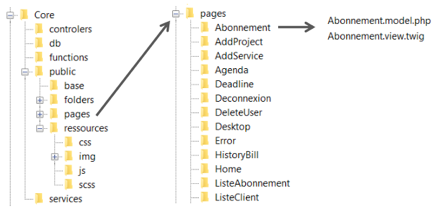

Makeflo
Présentation de l'entreprise:
MAKEFLO est une entreprise spécialisée en communication et marketing digital. Elle propose de nombreux services communs comme des conseils marketing, faire de la publicité ou créer des vidéos ; mais aussi et notamment des services digitaux comme créer un site web, assurer la présence d’une entreprise sur les réseaux sociaux ou encore faire du référencement SEO. Récemment, elle s’est mise au commerce de solutions technologiques avec la vente de standard téléphonique. Son siège est aujourd’hui situé à Paris où trois autres membres de l’équipe –deux développeurs et un comptable- travaillent toujours, mais compte être relocalisé à Noisiel où, pour l’instant, seulement le directeur se trouve. MAKEFLO gère quelques gros clients tels que la RATP ou L.A. Girl qui sont constamment suivis par les développeurs parisiens, puis de nombreux et diverses plus petits clients gérer depuis Noisiel. MAKEFLO est une SASU, c’est-à-dire, une société par actions simplifiée à associé unique. Son capital social est de 1 000€ et son chiffre d’affaire est de 100 000€ environ.
Organisation et équipement utilisé
J’ai travaillé pour le pôle informatique sur Noisiel sous la tutelle d’Edmas Mateky. En tant que développeur informatique, j’ai poursuivi le projet de conception du site interne de MAKEFLO avec d’autres stagiaires.
- NetBeans, VisualStudio (Environnement de développement intégré)
- Plateforme de développement Web de type WAMP Apache - MySQL - PHP est 7.1.22
- Github
- 1and1 (Hébergeur web)
- Application Web fourni par 1&1 IONOS Gérer la base de données en MySQL Version 4.6.6
Présentation du projet
Pour sa gestion de la relation client, MAKEFLO a créé son site interne dashboard.makeflo.tv. Il possède deux interfaces bien distinctes : une première pour le client et une seconde pour l’administrateur.


Plus précisément, son but côté client est de permettre à ce dernier d’accéder à son compte MAKEFLO pour suivre ses contrats, ses factures et récupérer les potentiels fichiers multimédias correspondant à son projet. Le client peut aussi souscrire à de nouveaux services et garde continuellement la possibilité de joindre un administrateur pour d’éventuelles questions ou demander un rendez-vous. Côté administrateur, il permet d’ajouter les nouveaux comptes : administrateur ou client, de créer de nouveaux services, de charger des contrats et des factures et de gérer les projets des clients. Il peut aussi vérifier les impayés, les prises de rendez-vous et les dates butoir des projets. Il permet de fournir des solutions clé en main pour n’importe quel client ou administrateur non spécialisé en informatique.
Il permet de fournir des solutions clé en main pour n’importe quel client ou administrateur non spécialisé en informatique. Le site est organisé selon un modèle MVC particulier et possède sa propre base de données. 
Lorsque je suis arrivée sur le projet, la structure du site, l’intégration de toutes les fonctions et également de celles touchant à la base de données. Il avait également créé presque toutes les pages nécessaires pour un aperçu basique du site.
J’ai été mise en équipe avec un autre stagiaire afin de poursuivre sa conception et de rendre au plus vite une première version bêta testable dans de vraies conditions. Ce projet s’inscrit dans la liste de ceux en cours sur notre tableau Trello. Ce dernier nous permet de voir l’avancement des tâches et de consulter leur date butoir.

Ma contribution
Mon role fut avant tout de coder le back-end des differentes pages déja concus. J'ai pu mais aussi crée d'autre vue avec bootstrap et le generateur de templete Twig aini que générer la documentation des différentes méthodes du projets.